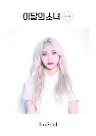

Jinsoul

A sétima membro do grupo a ser revelada com sua música de estreia: Singing Int The Rain.
Aqui vai algumas informações sobre ela.
- Nome de Nascimento: Jung Jin-soul (정진솔).
- Stage Name: JinSoul (진솔).
- Nascimento: 13 de junho de 1997.
- Nacionalidade: Coreano.
- Mês: Garota de Junho (apresentada em junho de 2017).
- Animal: Peixe Betta Azul.
- Cor: Azul.
- Posição do grupo: Rapper principal, vocalista chefe, visual.
- Signo do Zodíaco: Gêmeos.
- Sub-Unit: ODD EYE CIRCLE.
Fatos da Jinsoul:
- Ela tem um irmão mais velho.
- Ela é ex-trainee da DSP Entertainment.
- Seu apelido é Jindollie / Jindori.
- Para o seu teste, ela cantou "If You Return", de Gummy.
- Ela disse que se pudesse estar em outro grupo, adoraria estar em Red Velvet.
- Ela estudou piano por 9 anos.
- Ela adora webtoons.
- A modelo de JinSoul é Krystal (f (x)).
- JinSoul é o mais próximo de Hyunjin e Choerry.
- Seu modelo é Suzy.
Essas foram algumas curiosidades sobre a sétima membro a ser revelada do loona. Ela já fez seu re-debut (segunda estreia) como membro do OEC, já que elas ganharam outro processo contra sua antiga empresa que as impediam de promover com esse nome. Ela junto com a Kim Lip e Choerry debutaram no mês de julho desse ano.
Confira abaixo as redes sociais de Jinsoul.
Instagram
Canal oficial do grupo
@official_ARTMS